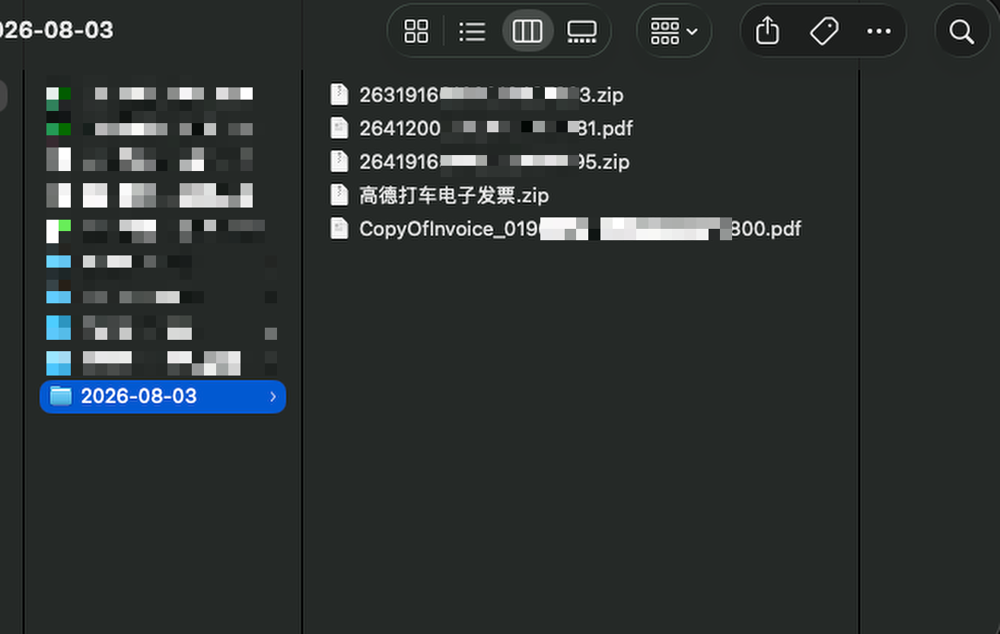

发票材料
电子发票 PDF、XML、OFD、发票压缩包、铁路或航空电子客票。
第一步 / 发票准备
收齐发票、行程和支付凭证，确认报销类型与报销人。材料准备好后，选择 Codex 或 WorkBuddy 自动整理。
01
原始文件直接放入文件夹，保留完整票面和附件。
电子发票 PDF、XML、OFD、发票压缩包、铁路或航空电子客票。
打车行程单、住宿水单、订阅回执、费用明细等。
付款截图、银行卡扣款记录或其他金额依据。

02
整理时提供文件夹位置、报销类型和实际报销人姓名。
差旅报销
包含跨城交通、住宿、出差期间交通和补贴。
其他报销
包含 AI 订阅、市内交通、办公费用等。
03
两种工具任选一种，均先生成摘要，经你确认后生成终稿。
第二步 · 方式一
安装 JG Work 插件，在 Codex 中提供报销文件夹，核对摘要后生成终稿。
使用 Codex 整理 →第二步 · 方式二
导入 JG报销助理专家包，在 WorkBuddy 中提供报销文件夹，核对摘要后生成终稿。
使用 WorkBuddy 整理 →